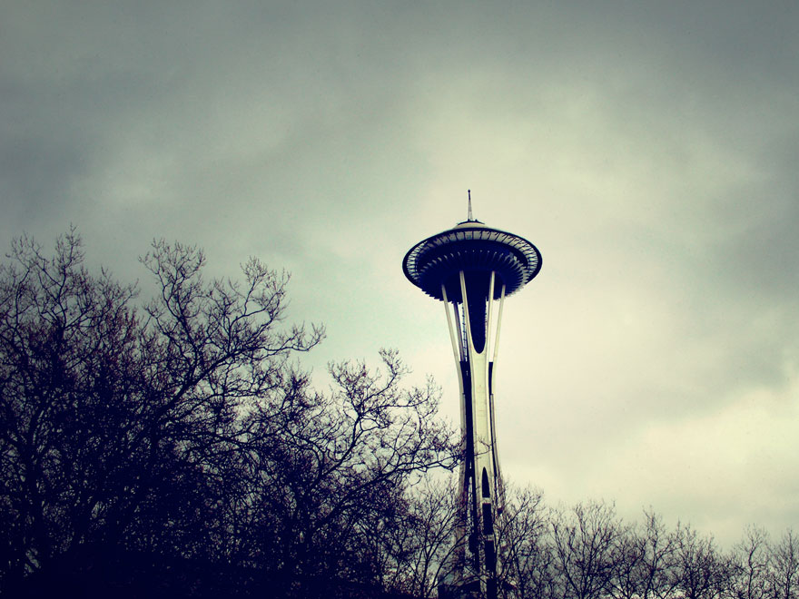

<article class="page type-page status-publish has-post-thumbnail hentry" style="background-image: url(img/screenshot.jpg)">
<div class="article-wrap">

    <div class="photo layout-single-column">
        <figure>
            
        </figure>
    </div>

    <header class="entry-header layout-single-column">
        <h1 class="entry-title">About</h1>
    </header><!-- .entry-header -->

    <div class="entry-content layout-single-column">
        <p>Seattle is a photo blog theme for WordPress. It was built from the ground up, using the fantastic <a href="http://underscores.me/">Underscores</a> starter theme from Automatic (the company behind WordPress). I don&#8217;t blog that often on here, so I wanted the focus to really be on photos and other media uploads. It is, however, versatile enough that it can be used for just about anything. All posts can have a featured image, which can change the visual appearance of any given post, depending on it&#8217;s format. For example, Quotes and image type posts will have a scalable faded background. </p>

        <p>For a live demo, visit my photo blog, <a href="http://tyler.camera/">tyler.camera</a>.</p>

        <h3><a href="https://github.com/underlost/seattle/releases/download/v1.0/seattle.zip">Download Theme &raquo;</a></h3>

        <h3><a href="https://github.com/underlost/seattle">View Source &raquo;</a></h3>
    </div><!-- .entry-content -->

</div>
</article><!-- #post-## -->
